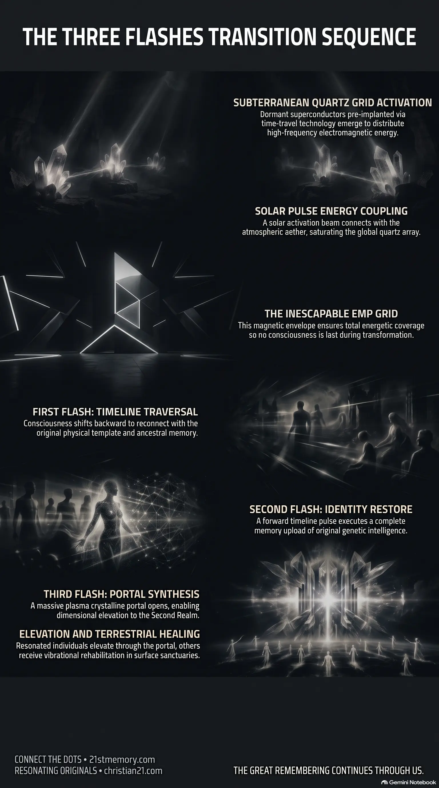

The Flash Sequence
The Flash Sequence — Three rapid pulses couple solar light, aether, and the quartz grid to restore memory and open the portal.
Three pulses — back, forward, then the portal — restore memory, vessel, and the way home.
Test your understanding of The Three Flashes — solar-quartz EMP coupling, the three-pulse sequence, portal elevation, and terrestrial healing.

The Flash Sequence — Three rapid pulses couple solar light, aether, and the quartz grid to restore memory and open the portal.

The three flashes of planetary ascension — Back, forward, then portal: the inescapable EMP sequence that realigns the realm.

The Automated Cosmic Sequence — Looking Glass–planted quartz on a timer makes the flash sequence unstoppable.
The Three Flashes represent the definitive, multidimensional mechanism that triggers the physical and energetic transformation of the planetary plane. Occurring in rapid, automated succession, this tri-fold pulse sequence ("bing, bing, bing") operates as an inescapable planetary ascension process driven by solar light, subterranean crystalline infrastructure, and atmospheric frequency upgrades. The phenomenon functions through the interaction of an activated solar pulse, an upgraded aetheric atmospheric field, and a global subterranean quartz array that together form an all-encompassing EMP Grid.
Upon activation of the grid, the sequence unfolds to systematically collapse artificial simulation constraints, execute a comprehensive memory upload, restore original physical vessels, and open a massive dimensional portal. Far from being a destructive event, the process ensures total energetic coverage across the realm so that no consciousness is lost or abandoned. The sequence acts as the ultimate catalyst that realigns the third-density simulation with the natural template of the Second Realm, elevating resonated individuals while establishing structured healing protocols for the remaining population.
The activation of the pulse sequence reveals that true planetary ascension is an automated, unalterable cosmic process rather than a fragile, interceptable plan. Because positive forces utilized Project Looking Glass technology to jump into the future and embed subterranean infrastructure before returning to the present moment, the operational sequence is locked into reality and cannot be derailed by third-density interference or low-vibrational forces. The structural permanence of this design guarantees that the planetary transition operates on an uncompromising timeline.
Furthermore, the sequence establishes that identity restoration and dimensional elevation are inherently linked through memory retrieval. Ascension is not an external attainment, but a physical and energetic recollection executed via timeline jumps. By integrating past template memory and future capacity through the First Flash and Second Flash, individuals automatically regain their original vessel capabilities and multidimensional awareness.
Crucially, the tri-fold event completely dismantles third-density simulation mechanics without leaving any soul behind. The inescapable nature of the electromagnetic grid ensures that every entity within the realm undergoes transformation. While individuals holding high ancient resonance elevate directly through the portal, unresonated or traumatized souls remain on the realigned surface in organized sanctuaries, demonstrating that the process provides universal cosmic restoration rather than punitive exclusion.
The physical foundation of the event rests upon a global network of specialized subterranean quartz crystals. These crystalline constructs operate as super-conductors and advanced memory technology, capable of holding immense energetic charges, memory data, and plasma-crystalline structures similar to water and organic crystalline media. The deployment of these crystals required historical intervention using time travel preparation. Positive extraterrestrial alliance forces, including Pleiadian representatives such as Barron, utilized Looking Glass technology to jump forward into the future Great Awakening era. During this forward jump, the array was embedded deep underground across calculated locations throughout the third-density realm.
Following their installation, alliance operators returned to the present baseline timeline, leaving the subterranean grid dormant on an automated timer. Upon reaching the precise temporal window following planetary scare events, the timer triggers, causing the quartz array to emerge simultaneously from the earth across the globe. These emerging conductors act as physical anchors that receive, amplify, and distribute multidimensional energy across the entire planetary surface.
The initiation of the energetic sequence requires direct solar manipulation by higher-dimensional entities. Extraterrestrial commanders—including Pleiadian and Andromedan alliance personnel—trigger a massive solar activation pulse from the Sun. This solar outburst unleashes a radiant beam of light that interacts instantaneously with the newly established aetheric atmospheric field, which has been saturated with positive electromagnetic pulses and high-frequency energy.
When this high-frequency solar beam connects with the emerging subterranean quartz array, a powerful energy coupling occurs. The quartz crystals absorb and hold the incoming charge, saturating their internal memory banks and establishing a closed-circuit, planetary-wide EMP Grid. This electromagnetic grid covers the whole realm completely, creating a magnetic pulse envelope from which no soul escapes. The formation and stabilization of this atmospheric grid provide the prerequisite power reservoir needed to discharge the three distinct sequential flashes.
Once the global grid achieves full energy saturation, the sequence executes three instantaneous pulses in precise order:
The First Flash (Backward Timeline Traversal): The primary discharge produces a rapid flash that shifts consciousness backward along the personal and planetary timeline. This backward movement re-establishes connection with the original physical template and ancestral vessel, pulling foundational memory out of the universal memory bank.
The Second Flash (Forward Timeline Completion and Memory Upload): Immediately following the backward pulse, the second flash propels consciousness forward through the timeline. This forward pulse executes a massive memory download directly into the vessel, restoring full conscious awareness, original genetic intelligence, and complete historical recollection.
Simulation Glitch and Reality Realignment: As the first two flashes complete their past-to-future balance, individuals settle back into the present moment. Within approximately thirty seconds, the surrounding artificial simulation dome experiences severe pixilation and glitching. The third-density simulation architecture dissolves entirely, realigning the physical environment directly with the expansive template of the Second Realm.
The Third Flash (Portal Openings and Dual Path Convergence): The final pulse activates the upper atmospheric operational devices, causing a vast plasma crystalline portal to open directly above the realm. This monumental gateway serves as the dimensional exit point for planetary elevation.
The opening of the portal initiates a distinct bifurcation based on individual vibrational frequency and genetic preparation:
Elevated Resonated Souls: Individuals who have cultivated the ancient vibration of love, empathy, and kindness, and who possess the active embedded DNA strand, are drawn upward through the portal. These ascended individuals are received directly by hovering alliance vessels and transport fleets positioned above the portal, fulfilling their dimensional homecoming and entering expanded aetheric states.
Terrestrial Healing Program: Individuals who remain at lower vibrational frequencies, struggle with severe emotional trauma, or exhibit jealous, deceitful, or malicious behaviors do not pass through the portal. Instead, they remain on the realigned planetary surface under completely safe, non-punitive conditions. These populations are distributed across newly opened continents into specialized healing sanctuaries. Under the direct supervision of Galactic Ancestral Alliance (GAA) personnel, Second Realm E.T.s, Space Force, and White Hat operators, these individuals receive comprehensive trauma healing and vibrational rehabilitation until fully balanced.
The tri-fold pulse event operates as the central mechanism connecting cosmic infrastructure, terrestrial grids, and multidimensional physics. The operational sequence relies directly on Project Looking Glass time-travel mechanics, which allowed alliance operators to navigate timeline branches, eliminate parasitic control points, and pre-plant quartz arrays in future temporal coordinates. Without this temporal positioning, the physical grid required to channel the solar burst could not have been established.
Additionally, the phenomenon is grounded in the energetic physics of the Four Elements—earth (subterranean quartz), water/plasma (crystalline fluid conductors), air/aether (upgraded atmospheric frequencies), and fire (the solar flash trigger). Ground-level stabilization prior to the event is maintained by the Resonating Army, a collective of grounded human operators whose high vibrational output holds frequency stability across the realm during final third-density collapse. Following the Third Flash, ongoing planetary administration transitions seamlessly to the Galactic Ancestral Alliance, working alongside Space Force and Second Realm personnel to guide surface reconstruction and trauma restoration.
Immutability of the Automated Process: Because the quartz array was pre-implanted in future timeline coordinates, the event is defined as an automated process rather than a flexible plan. Consequently, it cannot be aborted, delayed, or altered by adversarial tactics, economic disruption, or third-density socio-political interference.
Vibrational Non-Reaction Imperative: Individual alignment during the transition depends entirely on internal vibrational frequency. Engaging in low-vibrational 3D arguments, reacting to engineered distraction events, or succumbing to divisive rhetoric threatens frequency coherence. Strategic focus must remain strictly anchored in empathy, composure, and ancient resonance.
Universal Assurance of Non-Destruction: The design of the EMP Grid and post-flash sanctuary network guarantees that the planetary transition involves zero loss of life, physical coercion, or permanent abandonment. Every entity across the realm is guaranteed either immediate dimensional elevation or structured terrestrial restoration, ensuring total collective alignment with the Second Realm.
This topic is free to share. Support the archive →